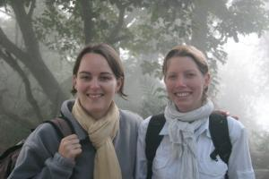

Le 27 novembre 2004,
 Réveil matinal et après avoir ingurgité un bon petit déjeuner (avec croissants s’il vous plait !), nous nous sommes dirigés vers la gare pour prendre notre train. Nous n’étions pas mécontents de quitter Delhi qui est, certes très intéressante, mais un peu trop polluée à notre goût ... Et puis, nous avions hâte de continuer notre voyage en passant par d’autres étapes ! Nous avons pris des billets en seconde classe et franchement j’ai été agréablement surprise. Je pensais que nous serions tassés à 2 sur une seule place, mais ça n’a pas du tout été le cas. Nous étions a l’aise pendant ces 3h de trajet et avons même fait la connaissance d’un israélien baroudeur et d’une coréenne vivant en Nouvelle-Zélande qui étaient très sympas ! A l’arrivée a Agra, Gaëlle et moi nous sommes jetées dans les bras l’une de l’autre, j’étais vraiment heureuse de la voir ! Elle était en super forme et avait une pêche d’enfer (comme d’habitude !). Nous décidons de partir pour Bharatpur en bus afin de faire un tour dans la plus grande réserve naturelle d’Inde. Durant le trajet, Gaëlle et moi nous racontons notre vie comme 2 pipelettes, tandis que Michael parle avec un vieil hindou de politique et autres sujets philosophiques ! Arrivés à destination, nous trouvons rapidement un petit hôtel bien sympathique et tout le monde au lit !Eve-Laure
{kind=link}